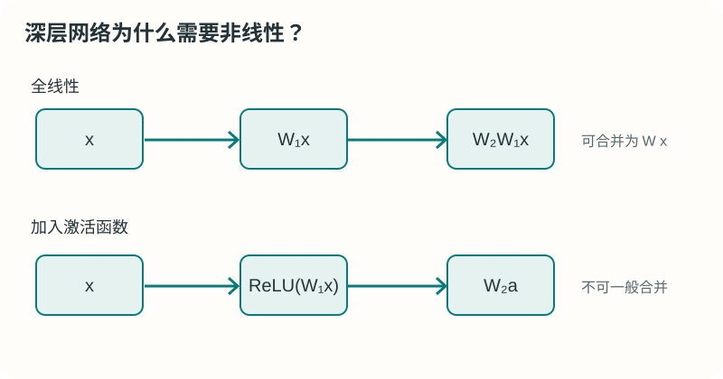
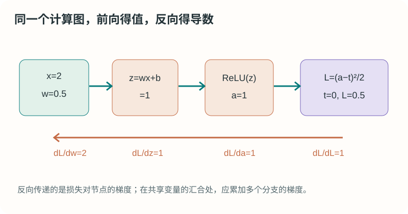

CHAPTER 04 · GRADIENTS
神经网络与反向传播
理解为什么需要激活函数，并从一个神经元开始，亲自计算“损失对权重的变化率”。
线性层堆得再深，为什么仍不够？
一个全连接层对列向量进行 z=Wx+b 变换。如果多个层之间没有激活函数，多个仿射变换合成后仍是一个仿射变换，无法仅靠加深网络获得新的非线性决策边界。ReLU、tanh 和 sigmoid 让模型能表示更复杂的分段或弯曲关系，但它们也影响梯度传播和数值稳定性。

例如，ReLU(z)=max(0,z)：z 为正时导数为 1，为负时为 0，在 0 处不可微，实际框架使用规定的次梯度。对于负输入，ReLU 的零梯度可能导致某些神经元长期不再更新，初始化和学习率也会影响这一问题。
反向传播是沿计算图反向使用链式法则
以单个神经元为例，令 x=2,w=0.5,b=0，经过 z=wx+b=1、a=ReLU(z)=1，目标 t=0，平方损失 L=(a-t)²/2=0.5。要优化 w，并不需要试遍所有值，只需沿图反向计算损失对 w 的导数。

右侧三个因子分别来自平方误差、ReLU 当前分支和乘法节点。
如果一个变量进入两个分支，反向传播必须将两个分支的梯度相加；如果一个参数在不同位置复用，梯度同样要累积。这是实现自动微分时不可忽略的规则。
分类损失与输出维度要配套
多分类器常输出 logits，经 softmax 得到各类别概率。交叉熵损失通常直接接受 logits 的稳定实现（例如 PyTorch 的 CrossEntropyLoss），它会避免直接对非常小的概率取对数造成的数值问题。若每个样本有 C 类，logits 形状是 (N,C)，单标签目标通常为 (N,) 整数类别索引。
不要把 MSE、二分类 BCE 和多分类交叉熵视为随时可互换的默认配置；目标分布、输出激活与标签编码必须一致。计算准确率时还要将推理阶段的类别选择与训练阶段的梯度目标区分开。
交互实验：改变权重，观察梯度方向
下面把输入固定为 x=2、偏置为 0、标签 t=0。拖动权重 w，观察损失 L 和导数 dL/dw 的变化。正权重时 w 越大，平方损失越大，梯度方向指向更小的 w；在 w=0 使用 ReLU 的零次梯度约定。
a = 1.000；L = 0.500；dL/dw = 2.000
有限差分核对解析梯度
链式法则可以用数值差分做局部交叉检查。下例只需要 Python 标准库；在 w=0.5 这个可微点，数值梯度应与解析值 2 近似相等。靠近 ReLU 的折点时，数值差分会受不可微性影响。
def loss(w, x=2.0, t=0.0):
a = max(w * x, 0.0)
return 0.5 * (a - t) ** 2
w, eps = 0.5, 1e-5
numerical = (loss(w + eps) - loss(w - eps)) / (2 * eps)
a = max(w * 2.0, 0.0)
analytical = (a - 0.0) * 1.0 * 2.0
assert abs(numerical - analytical) < 1e-6
assert analytical == 2.0
print("analytical:", analytical, "numerical:", numerical)一次差分通过只说明此点的导数实现相符，不等于验证整张复杂网络的训练收敛；对网络参数做 gradient check 还需要选取合适的误差尺度、固定随机数和防止非光滑操作干扰。